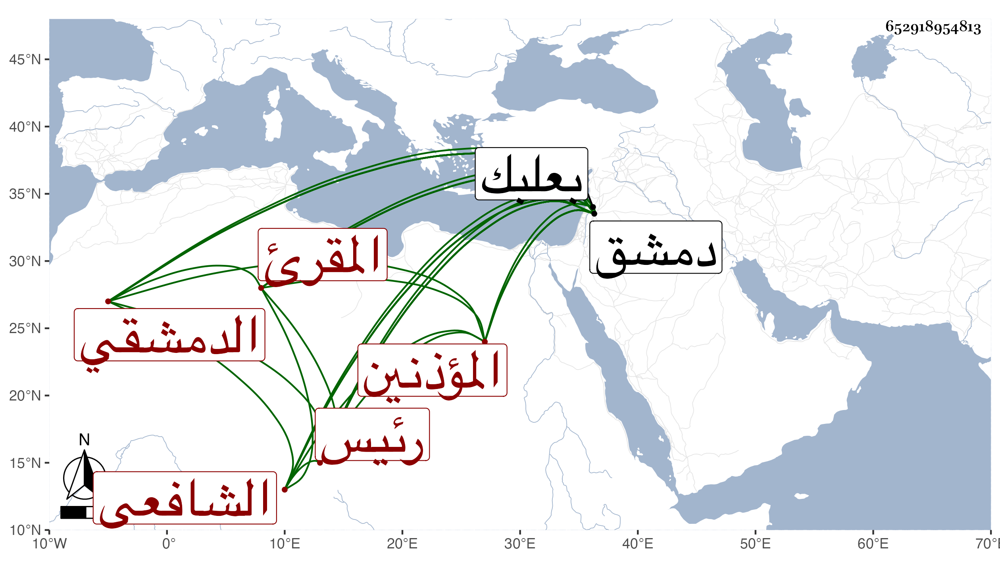

0902Sakhawi.DawLamic.ITO20230111-ara1.EIS1600.652918954813
Biography ID: 652918954813
478
عثمان بن محمد بن خليل بن أحمد بن يوسف الفخر أبو عمرو الدمشقي الشافعي المقرئ رئيس المؤذنين بالجامع الأموي والد أحمد الماضي ويعرف بابن الصلف بالمهملة والفاء كالكتف . ولد سنة اثنتين وسبعين وسبعمائة وأخذ عن جماعة قبل الفتنة وبعدها فالقراءات عن ابن ربيعة وابن الجزري والشهاب بن عياش وغيرهم والفقه وأصوله وغيرهما عن الشمس البرماوي والنحو عن الشمس ابن العيار الحموي نزيل دمشق وسمع على ابن الشرائحي وعائشة ابنة ابن عبد الهادي وببعلبك على التاج بن بردس وقبل ذلك بدمشق على أبي هريرة بن الذهبي والكمال بن النحاس ورسلان بن الذهبي وابن أبي المجد وابن صديق وأبي اليسر بن الصائغ في آخرين منهم يحيى الرحبي والشهاب أبو العباس أحمد بن علي ابن تميم والعز محمد بن محمد الإياسي والمعين أبو محمد بن عثمان بن خليل المصري ومن مسموعه عليه معجم أبي يعلى الموصلي وحدث سمع منه الفضلاء وكان من ذوي الأصوات الحسنة جهوري الصوت عاليه حسن الإنشاء والوعظ وله إخوة يقال أنهم عشرة مسمين بأسماء العشرة ، ولم يزل يدأب ويعاني معالي الأخلاق إلى أن كان أحد أعيان دمشق علما وصوتا ورياسة ونظما ونثرا ، ولما قدم ابن الجوزي دمشق في سنة سبع وعشرين كان أجل من لازمه وكان القارئ لغالب ما قرئ عليه من تصانيفه بل قرأ البخاري غير مرة وأقرأ وانتفع به جماعة كالزين خطاب الماضي وله جلد زائد على ملازمة الأشغال والاشتغال والأذان ومباشرة وظائفه وكتب الكثير بخطه وكان خطيب المصلى بل خطب بالجامع الأموي عن النجم بن حجي مدة ولما وقع الطاعون في دمشق سنة إحدى وأربعين جمع الناس غير مرة في الجامع ودعاهم لرفعه وقرأ البخاري وجمعهم عليه وكان وقتا مشهودا ، ثم مات في آخر ليلة الأحد منتصف شوال منها في مسجده بمسجد النارنج جوار المصلى ودفن بتربتهم هناك وشهده جمع وافر ووصفه البقاعي بالشيخ الإمام العلامة وجازف الرضي الغزي فذكره في طبقات الشافعية رحمه الله وإيانا .
